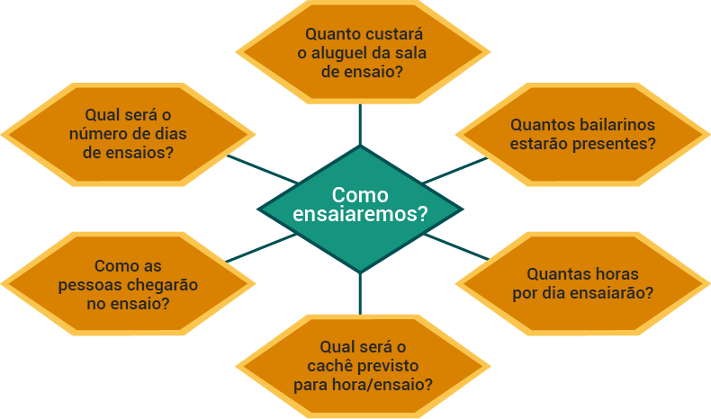

Querido estudante, seja bem-vindo ao segundo módulo da terceira etapa!
Aqui, daremos início ao nosso voo. Então segure aí e vamos em frente!
O foco desta etapa é a prática da execução de projetos culturais e, neste segundo módulo, compreenderemos a importância da logística na execução de um projeto cultural.
vídeo
Todo salto precisa de um impulso anterior, um momento de concentração da energia para que aquele movimento explosivo possa ser realizado.
E então, quando a energia concentrada é liberada, temos o movimento, o voo, o salto, ou até o passo. Não existe movimento sem impulso. Não existe vida sem movimento.
Nem cultura.
Esta terceira etapa do curso, como conversamos, é a parte final de nossa jornada juntos, um retorno, um último voo.
Então, precisamos de um impulso.
Pois, é exatamente isso que vamos encontrar aqui neste segundo módulo da terceira etapa, um impulso para nosso voo, que é a compreensão da importância da logística para a execução de projetos culturais.
Lembra que temos discutido as 3 Etapas de Produção de um projeto cultural, Pré-produção, Produção (execução) e Pós-produção?
Durante a Pré-produção buscamos recursos, desenvolvemos o planejamento do projeto e outras tarefas de organização; já na etapa de Produção (execução) é que vamos transformar em realidade as ações que planejamos, utilizando os recursos que obtivemos para a realização do projeto e acompanhando as atividades do projeto; e a Pós-produção é uma etapa de avaliação e finalização, quando realizamos o balanço financeiro, produzimos relatórios e prestações de contas, entre outras coisas.
Então, quando falamos executar um projeto, estamos nos referindo à Etapa de Produção (execução), ou seja, estamos nos referindo a uma série de tarefas necessárias para colocar em prática as ações planejadas e acompanhar sua realização.
E a logística?
Vamos entender, ao longo deste módulo, que a logística é o conjunto de elementos práticos necessários para a realização de uma certa tarefa. Complicou? A gente desenrola: vamos pensar na logística como tudo o que precisamos usar e fazer para dar conta de uma determinada tarefa.
Para isso, temos nossos conhecimentos e nossas ferramentas que nos impulsionam e guiam nossos saltos e voos pelos ares da cultura!
“Compreender a importância da logística na execução de um projeto cultural” significa compreender o que você precisa usar e fazer para realizar e acompanhar as ações do projeto, anteriormente planejadas.
Todo salto precisa de um impulso anterior, um momento de concentração da energia para que aquele movimento explosivo possa ser realizado. O entendimento da logística da execução de projetos culturais e da sua importância é o impulso para o nosso salto!
Para o alto, caro estudante!
Jack Garcia, de Porto Alegre (RS), é produtor cultural e sócio-proprietário da produtora VAMODALE. Jack tem uma grande experiência na execução de projetos culturais e, neste podcast, contará um pouco do que aprendeu, ao longo dos anos, a respeito das necessidades e das ferramentas envolvidas na execução de projetos.
Fique ligado no podcast e ouça com atenção as dicas de Jack!
Como vimos até aqui, a execução da produção cultural é fazer acontecer, é realizar tudo o que foi planejado e elaborado. Para isso, precisamos de (rufem os tambores) dinheiro, recursos para a execução. Esses recursos podem ser obtidos, como já vimos nas etapas anteriores, de diversas formas (por editais, patrocínios, financiamentos coletivos etc.). Você pode também realizar o projeto cultural com recursos próprios, buscar parcerias, fazer rifas, realizar sorteios etc.
Entretanto, quando chega a etapa de execução, é preciso estar atento aos recursos de que dispomos para não gerar custos desnecessários, ou que poderiam ser minimizados.
Até aqui, falamos de orçamentos diversas vezes, certo? Falamos que, para planejar um projeto cultural, é necessário ter uma ideia dos custos das ações planejadas. Falamos ainda que, quando elaboramos o projeto para um certo mecanismo de financiamento, precisamos adaptar o orçamento de acordo com as exigências do mecanismo de financiamento escolhido. Poderíamos dizer que, até agora, temos falado de como um orçamento detalhado e coerente é fundamental para planejar um projeto e obter os recursos, ou seja, estamos falando da parte de “levantar” o dinheiro. Agora falaremos da execução do orçamento planejado, ou seja, da aplicação dos recursos obtidos, ou, ainda, da parte de gastar o dinheiro “levantado”.
Talvez passe pela sua cabeça um pensamento mais ou menos assim: “o problema é ganhar o dinheiro, gastar é fácil”. Porém gastar bem requer planejamento, cuidado e adaptação, a fim de garantir que os recursos obtidos sejam suficientes para a realização das atividades previstas e que o projeto promova para o público ações de qualidade e relevância que colaborem com o enriquecimento do panorama cultural das comunidades.
vídeo
vídeo
vídeo
E aí, o que achou da conversa com Jack Garcia? Depois que você finalizar a leitura deste material, vá ao fórum Ponto de Cultura e compartilhe sua opinião com todo mundo!
Imagine você como parte da equipe de uma produtora cultural ou até mesmo à frente de algum projeto cultural. Você, em algum momento, cruzará com a palavra “logística”. Mas o que significa essa palavra?


A logística é uma palavra de origem grega, relativa ao cálculo e ao raciocínio, e diz respeito a um conjunto de métodos e atividades que garantem recursos e informações para a execução de todas as atividades de um determinado objetivo.
Atualmente, a logística implica conhecimentos de diversas áreas, como: engenharia, economia, marketing, tecnologia, recursos humanos etc.
A logística, de um modo geral, está assentada nas características operacional e de gestão da execução. Trabalha na operação de recursos materiais, financeiros, de pessoas e de informações.
Entretanto, perceba que o conceito de logística não está tão distante da nossa realidade. Por exemplo: imagine que você quer dar uma volta no parque. Como você vai até o parque? Como você voltará de lá? Com qual roupa você irá? Você consumirá algo lá? Como consumirá? Como pagará? E assim por diante.
Perceba que a logística está ligada a outra palavra: “como”. Lembre-se lá do nosso , em que uma das perguntas era “como?”. Então, isso é a logística. Sempre que organizamos o “como” fazer determinada coisa em nossa vida, estamos operacionalizando algo, ou seja, estamos na logística para a sua realização.
Assim, questionamos: Qual é o papel da logística dentro da produção cultural?

Na produção cultural, a logística é tornar todas as “coisas” possíveis e viáveis para o projeto. Ou seja, é a forma como esta ou aquela atividade (de todas etapas de produção) será executada; é a inclusão e o detalhamento (preços e dimensões físicas) de todos os materiais utilizados; é a organização (contratos, acordos, pagamentos, escolha etc.) da mão de obra necessária para cada atividade do projeto; é o acompanhamento das execuções das diversas atividades de um projeto cultural; é a realização de compras, locações e pagamentos previstos no orçamento do projeto. Assim, a logística, em produção cultural, é operacionalizar os “comos” previstos no projeto.
Na planilha de orçamento, por exemplo, a logística aparecerá como a locação de espaços para ensaios, locação de equipamentos, transporte etc. Tudo o que é necessário para fazer o projeto acontecer precisa estar dimensionado e, se tiver custos, listado na planilha de orçamento, por isso é importantíssimo que a logística esteja extremamente ligada ao orçamento geral do projeto cultural.
Outro exemplo: considere a Mirella no seu projeto . Mirella coloca os ensaios como um dos escopos de execução do projeto. Aqui pensamos: Qual é a logística para essa atividade? A produtora Mirella, portanto, irá se ocupar em essa atividade, pensando em questões como: Quantos ensaios serão? Qual será o cachê dos bailarinos para hora/ensaio? Quanto custará o aluguel da sala de ensaio? Quantos bailarinos estarão presentes? Quantas horas ensaiarão? Como as pessoas chegarão no ensaio?
Com base nessas questões, começa a logística de Mirella. Sendo assim, ela:
Neste último quesito, é normal que a produtora cultural esteja no primeiro dia de ensaio, mas não esteja necessariamente em todos dias.
Outro exemplo de logística para projetos culturais, continuando com o projeto de Mirella, é a montagem de . Todo evento cultural em que se utiliza um palco de apresentações (espetáculos de teatros/dança/circo, show de música etc.) necessita de uma logística para montar a iluminação, o cenário, a sonorização e para fazer uma passagem de palco (é quando os artistas vão ao palco, depois de tudo estar pronto, testar os equipamentos e familiarizar-se com as dimensões e possibilidades do palco). Nesse sentido, é necessário pensar em questões como:
![Imagem de uma tabela de rider técnico com a listagem de diversos equipamentos a serem requisitados pela produção. Texto inicial: Rider técnico teatro Wanda Fernandes. Lista de equipamentos abaixo: descrição – iluminação: refletor elipsoidal Telem 50, quantidade 9; refletor elipsoidal Altman 30, quantidade 10; refletor elipsoidal ETC, “não temos”; refletores PAR 64, quantidade 49; refletores PC, quantidade 10; refletores PC/Frenel, quantidade 24. Rack dimmer – Teknê 12 x 400, quantidade 4; total de dimmers do teatro, 72 canais; torres de madeira, quantidade 6; mesa de comando ETC Express 24/48, quantidade 1. Som – mesa Yamaha 01v, quantidade 1; caixas ativas Antera TS700, quantidade 2; subwoofer ativo JBL EON, quantidade 1; microfones Karsect sem fio, quantidade 2; e medusa no palco 20 vias, quantidade 1.](img/figura_2.png)
![Logística da montagem do palco. Onde serão as apresentações (qual será o espaço cultural)? De quais estruturas técnicas (rider de som e luz) dispõe o espaço escolhido? O que será necessário locar/comprar? Quanto tempo durará a montagem dos equipamentos técnicos (luz, som e cenário)? Quais profissionais estarão trabalhando na montagem? Quais serão os cachês para essa execução? Onde os profissionais que estão na montagem se alimentarão (pensando em um intervalo de 1 hora a 1 hora e 30 minutos)? Quanto custará essa alimentação? Quando será a passagem de palco?](img/esquema_2.png)
Seguindo a mesma lógica do exemplo anterior, dos ensaios, Mirella executará, dentro de uma logística, essa atividade de montagem de palco. Então, ela:
Então, percebemos que, na etapa de produção/execução de projetos culturais, a logística para cada atividade é de suma importância, para que a realização do evento cultural aconteça. Portanto, a execução dessa logística é o que assegurará a montagem correta das estruturas do evento cultural, a circulação estratégica e organizada de pessoas e objetos, assim como o cumprimento do cronograma no tempo certo, minimizando imprevistos.
Veja, a seguir, uma lista de itens para levar em consideração para a logística de execução de projeto cultural:
Perceba que a logística da execução de produções culturais demanda um grau de organização e entendimento do todo. É em razão disso que a produção do projeto necessita estar preparada.
Sendo assim, é importa nte para o produtor cultural (nos nossos exemplos anteriores, a Mirella) criar para cada atividade de execução uma lista de “coisas” a serem feitas e ir acompanhando e executando cada item dessa lista, a qual chamamos de “checklist das atividades”.